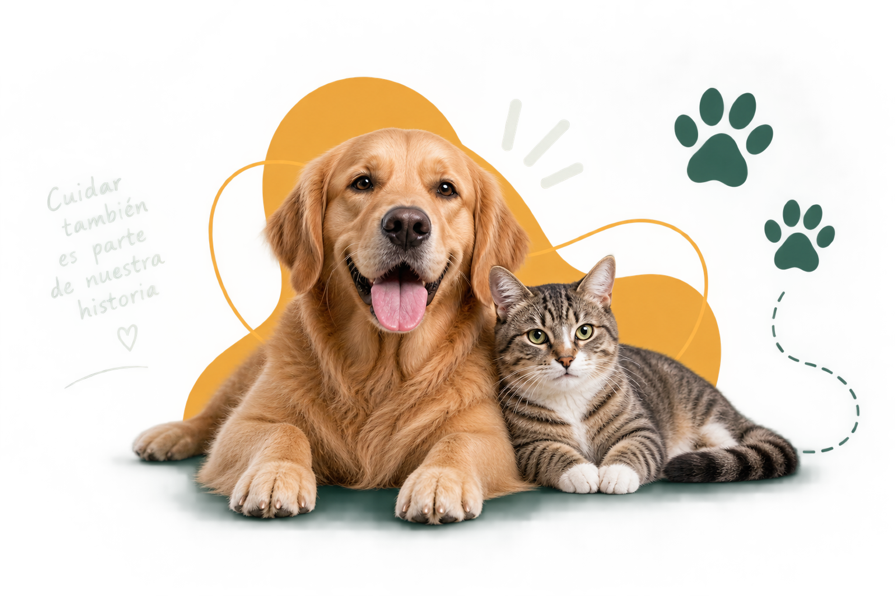
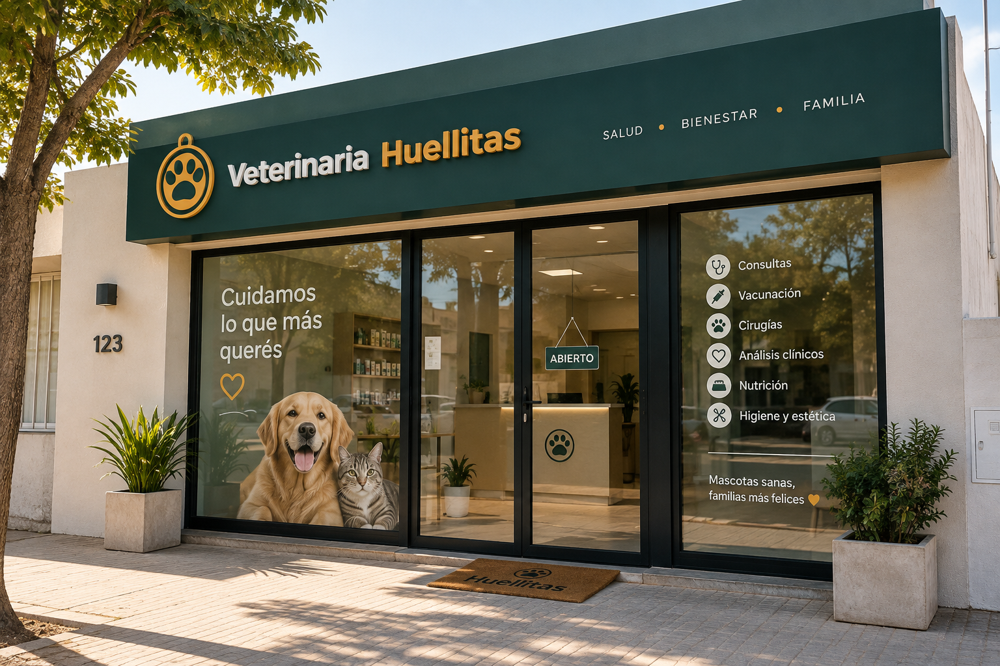

NUESTRA MISIÓN
Misión
Brindar atención veterinaria integral y de calidad, priorizando el bienestar de cada mascota y acompañando a sus familias con responsabilidad, ética y calidez humana.
Más que una veterinaria, somos un equipo de personas que ama a los animales y trabaja cada día para brindarles una vida más sana y feliz.
Conocé nuestra historia

Veterinaria Huellitas nació en Ceres, Santa Fe, con el sueño de crear un espacio donde las mascotas y sus familias se sientan acompañadas y bien cuidadas.
Comenzamos como un pequeño consultorio y, gracias a la confianza de la comunidad, fuimos creciendo e incorporando nuevos servicios, equipamiento y profesionales comprometidos.
Hoy seguimos con el mismo objetivo del primer día: brindar una atención veterinaria de calidad, cercana y humana.
Brindar atención veterinaria integral y de calidad, priorizando el bienestar de cada mascota y acompañando a sus familias con responsabilidad, ética y calidez humana.
Ser una veterinaria reconocida en la región por la excelencia de nuestros servicios, el compromiso con la salud animal y la confianza de nuestra comunidad.
Entendemos el vínculo único entre las mascotas y sus familias.
Actuamos con compromiso en cada diagnóstico y tratamiento.
Creemos en la colaboración para brindar la mejor atención.
Promovemos una vida sana, segura y feliz para todas las mascotas.